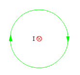

Lineas
de fuerza
Las líneas de fuerza del campo creado por un
cable están en un plano perpendicular a este y le rodean (En el
caso de un solo cable son circunferencias)
Sentido de la línea: un sacacorchos paralelo al ca-ble que gire
en el sentido de la línea esta avanzará en el sentido de
la corriente
 |
 |